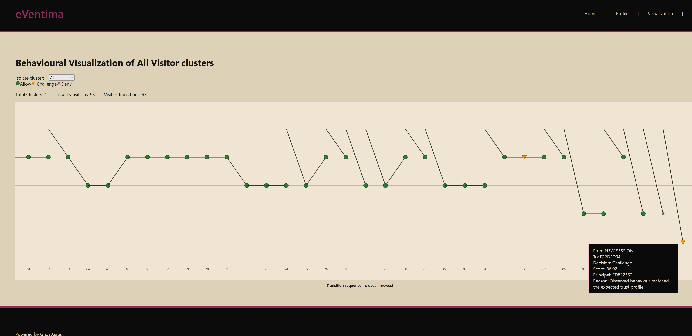

GHOSTGATE
Behavioural Trust Infrastructure for the API Boundary
Identity establishes who an actor claims to be. GhostGate evaluates whether its behaviour remains trustworthy.
WORKING MVP
Trust behaviour, not actor classification.
GhostGate maintains deterministic behavioural trust across API requests and makes synchronous trust decisions before protected application logic executes.
It does not require an actor to be classified as human, bot or AI. Instead, behavioural identity and activity over time provide the context for deterministic, explainable trust decisions.
Behavioural identity
Continuous trust
Deterministic evaluation
Explainable decisions

GhostGate working MVP — behavioural cluster and transition visualisation.